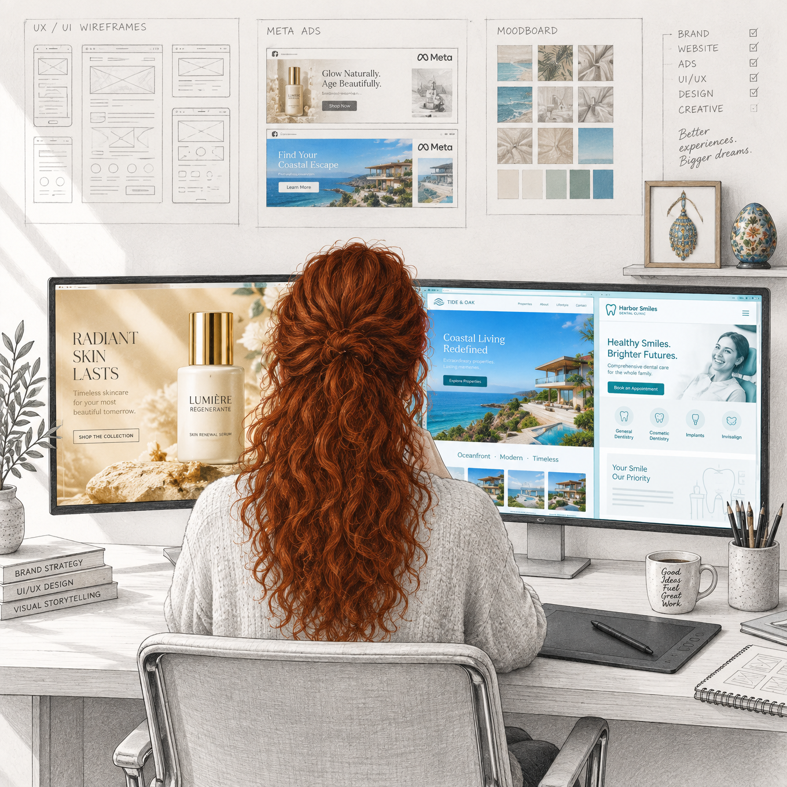
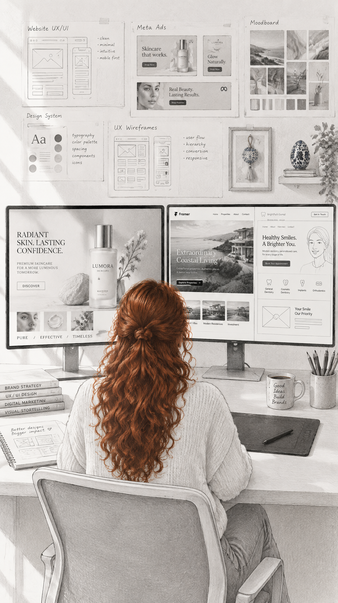
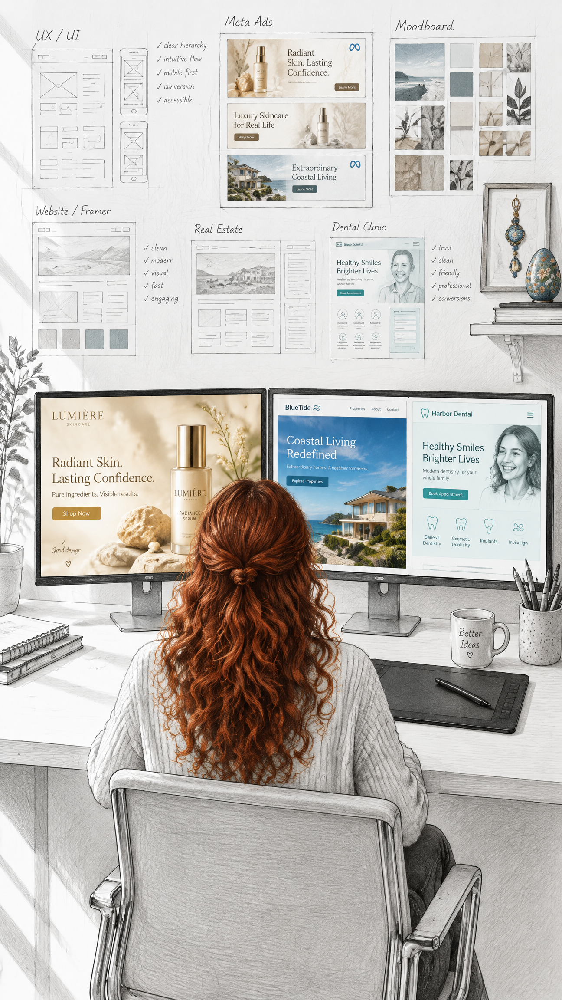
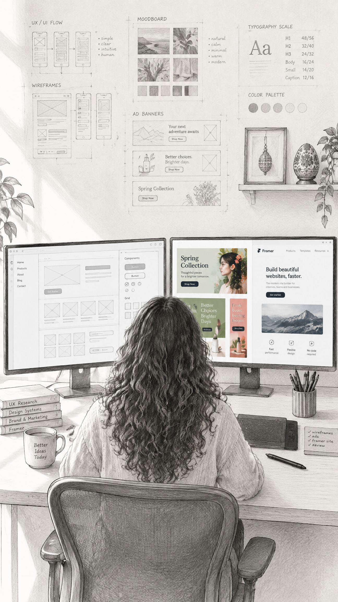
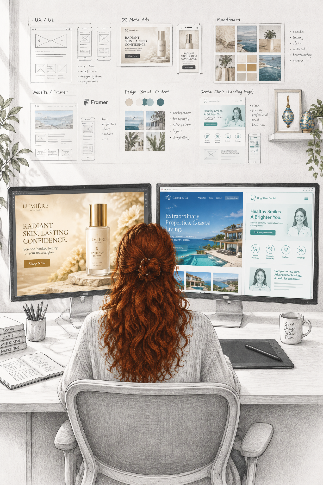
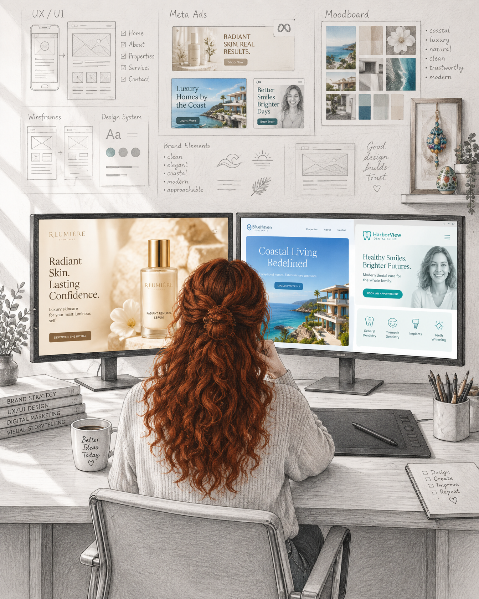

Digitális illusztráció · Kampány
Közösségi média és hirdetések
A merész ötletekből világos vizuális üzenetek születnek. A művészi kompozíciót, a digitális illusztrációt és a célzott kommunikációt kapcsolom össze emlékezetes közösségimédia- és hirdetési megjelenésekké.
← Vissza a főoldalraVálogatás
Digitális munkák





